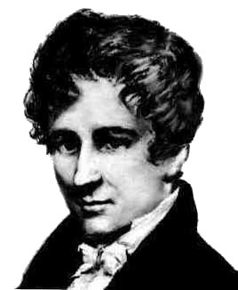

Niels Abel

5.8.1802, Finnöy, Norwegen - 6.4.1829, Froland, Norwegen
5.8.1802, Finnöy, Norwegen - 6.4.1829, Froland, Norwegen
Der folgende Text (gekürzt) stammt aus dem Buch "Biographien bedeutender Mathematiker" von H. Wussing und W.
Arnold (VEV Volk und Wissen 1983, 3. Auflage).
Niels Henrik Abel stammte aus einer Familie von Landpastoren. Als zweites Kind von sieben Kindern wurde er am 5. August 1802 auf der Insel Finnöy an der Südwestküste Norwegens geboren.
Abel wurde anfangs vom Vater, einem schwierigen Charakter, unterrichtet. Schliesslich gelang es, Niels Abel im Alter von 13 Jahren zusammen mit seinem älteren Bruder an der schon seit dem Mittelalter bestehenden Domschule in Oslo unterzubringen. Sein Lehrer, Bernt Michael Holmboe, gab ihm Poisson, Gauss, Newton, Lalande, d'Alembert, Lagrange und andere mathematische Autoren von Rang zu lesen und schirmte den sehr sensiblen, körperlich schwächlichen und anfälligen Niels Henrik vor den schlimmsten Übergriffen der Lehrer und Mitschüler ab.
Niels Henrik Abel stammte aus einer Familie von Landpastoren. Als zweites Kind von sieben Kindern wurde er am 5. August 1802 auf der Insel Finnöy an der Südwestküste Norwegens geboren.
Abel wurde anfangs vom Vater, einem schwierigen Charakter, unterrichtet. Schliesslich gelang es, Niels Abel im Alter von 13 Jahren zusammen mit seinem älteren Bruder an der schon seit dem Mittelalter bestehenden Domschule in Oslo unterzubringen. Sein Lehrer, Bernt Michael Holmboe, gab ihm Poisson, Gauss, Newton, Lalande, d'Alembert, Lagrange und andere mathematische Autoren von Rang zu lesen und schirmte den sehr sensiblen, körperlich schwächlichen und anfälligen Niels Henrik vor den schlimmsten Übergriffen der Lehrer und Mitschüler ab.
Abel machte sich in unglaublich kurzer Zeit die mathematischen Ergebnisse seiner Zeit zu eigen und fing bereits an, eigene Untersuchungen anzustellen. Er glaubte vorübergehend sogar, die seit Jahrhunderten vergeblich gesuchte Auflösung der allgemeinen algebraischen Gleichung fünften Grades in Radikalen gefunden zu haben; seine Lehrer und sogar die besten Mathematiker Norwegens vermochten nicht, über die Richtigkeit seiner Ansätze zu entscheiden. Diese öffentlich diskutierte Affäre trug Abel ein solches Ansehen und solche Empfehlungen ein, dass er 1821 an der Universität Oslo immatrikuliert werden konnte. Seine persönlichen Verhältnisse waren indes fast verzweifelt: Er war völlig mittellos, sein Elternhaus familiär zerrüttet und verschuldet, der Vater war am Scheitern seiner politischen und volksbildnerischen Reformpläne innerlich zerbrochen und schon 1820 verstorben, der ältere Bruder durch Krankheit erwerbsunfähig.
Um "das seltene Talent Abels der Wissenschaft zu erhalten", so hiess es in einem Antrag Holmboes an die Universitätsverwaltung, wurden Abel ausnahmsweise freie Unterkunft in der Universität sowie eine Art Taschengeld gewährt. Freunde unter den Studenten, entferntere Verwandte und Fürsprecher unter den Professoren - im Hinblick auf die zu erwartenden wissenschaftlichen Leistungen - sicherten eine wenn auch kümmerliche Existenz; freundschaftlichen Rat und Familienanschluss fand er bei dem Osloer Professor Chr. Hansteen. Hansteen war Herausgeber einer ersten wissenschaftlichen Zeitschrift, des "Magazins for Naturvidenskaben". Abel hat dort verschiedene kürzere Arbeiten publiziert, die typische Züge eines Autodidakten und zugleich auch die des reifenden Genies tragen. Beispielsweise tritt hier die erste explizite Problemstellung einer Integralgleichung auf.
Im Vordergrund seines Interesses standen schon damals die Theorie der elliptischen Funktionen und die Auflösungstheorie algebraischer Gleichungen; auf diesen beiden Gebieten wird er in den wenigen Jahren, die ihm noch vergönnt sein sollten, als einer der bedeutendsten Mathematiker in die Geschichte eingehen. Ende 1823 schon gelangte Abel zu der Einsicht, dass die Auflösung der allgemeinen Gleichung des Grades fünf in Radikalen unmöglich ist. Abel hatte seine erste bedeutende mathematische Entdeckung gemacht. Er musste übersehen, aus Mangel an Verbindungen zur wissenschaftlichen Welt, dass ihm hier schon ein anderer zuvorgekommen war, der Italiener P. Ruffini, der rund zweieinhalb Jahrzehnte vorher eben diese Entdeckung publiziert und einen in wesentlichen Teilen vollständigen Beweis dieser überraschenden Tatsache geliefert hatte. Erst später erfuhr Abel von Ruffini.
Die Universitätsbehörden in Oslo taten ihr Möglichstes, um Abel zu fördern. Auf Grund dringender Vorstellungen, insbesondere durch Professor Hansteen, wurden Abel ein bescheidenes, aber ausreichendes Stipendium gewährt sowie die finanziellen Mittel bereitgestellt, die es ihm ermöglichen sollten, auf einer Reise die wichtigen mathematische Zentren zu besuchen und insbesondere in Paris persönlichen Kontakt mit den führenden Mathematikern zu pflegen. Dort lebte A. M. Legendre, der beste Kenner der elliptischen Funktionen; dort wirkte A. L. Cauchy, einer der schärfsten Denker auf dem Gebiet der Analysis. Alles schien sich zum besten zu fügen.
Im Sommer 1825 reiste Abel ab; die Reise führte Abel von Kopenhagen zunächst nach Altona bei Hamburg, zu dem mit Gauss befreundeten berühmten Astronomen H. Chr. Schumacher. Den Winter verbrachte Abel in Berlin, herzlich aufgenommen insbesondere von dem Oberbaurat A. L. Crelle. Crelle war ein bedeutender und einflussreicher Ingenieur. Leidenschaftlich förderte er, selbst Autor mathematischer Abhandlungen, die Entwicklung der Mathematik in Preussen und rief gerade um diese Zeit die später in Deutschland führende mathematische Zeitschrift "Journal für die reine und angewandte Mathematik" ins Leben. Crelle ermunterte Abel, seine Ergebnisse in druckfertigen Abhandlungen niederzulegen. Abel arbeitete in knapp vier Monaten sechs Abhandlungen aus, die in Band 1 des Crelleschen Journals aufgenommen wurden. Mindestens zwei davon gehören zu den Marksteinen in der Geschichte der Mathematik. Die Abhandlung "Beweis der Unmöglichkeit der algebraischen Auflösbarkeit der allgemeinen Gleichungen, welche den vierten Grad übersteigen", beantwortete ein jahrhundertelang diskutiertes Problem, ging weit über Ruffini hinaus und gehört noch heute zu den klassischen Bestandteilen der Mathematik. Die Abhandlung "Über die binomische Reihe" trug wesentlich zur Verschärfung der Grundlagen der Analysis bei, indem sie die Konvergenztheorie unendlicher Reihen präzisierte. Diesen Sachverhalt bezeichnet man heute als Abelschen Stetigkeitssatz.
Abels Reise führte weiter über Freiberg, Dresden, Wien, über einen längeren Abstecher nach Venedig schliesslich im Juli 1826 nach Paris. Dort blieb er bis Jahresschluss. Indes, Abels hochgesteckte Erwartungen sollten sich nicht erfüllen. Zu selbstbewusst war der Kreis der - unbestreitbar führenden- französischen Mathematiker, als dass ein fast Unbekannter dort hätte ohne weiteres Fuss fassen können. Insbesondere erwies sich die Annäherung an Cauchy als unmöglich, der, selbst in einem wahren Schaffensrausch mathematischer Untersuchungen begriffen, Arbeiten anderer Mathematiker nicht die gebührende Aufmerksamkeit entgegenbringen konnte und wollte. In einem Brief an Holmboe urteilt Abel: "Cauchy ist närrisch und es gibt keinen Weg, mit ihm zurechtzukommen, obgleich er gegenwärtig der Mathematiker ist, der am besten weiss, wie Mathematik gemacht werden sollte."
Am 30. Oktober 1826 überreichte Abel der Pariser Akademie seine grossangelegte "Untersuchung über eine allgemeine Eigenschaft einer sehr verbreiteten Klasse transzendenter Funktionen", die das sogenannte "Abelsche Theorem" enthält. Grob gesprochen, handelt es sich um eine ausserordentliche Verallgemeinerung des Additionstheorems der elliptischen Integrale. Dieses Manuskript betrachtete Abel als Schlüssel, der ihm den Eintritt in den exklusiven Kreis der französischen Gelehrten eröffnen sollte. Er wusste, mit Recht, dass seine Ergebnisse bedeutend waren. Cauchy war von der Akademie beauftragt, das Gutachten anzufertigen. Cauchy aber - leider ist Abels Fall nicht der einzige geblieben - schreckte vor der Länge und Schwierigkeit des Manuskriptes zurück, weil es ihm, zuviel Zeitverlust bei der Ausarbeitung seiner Ergebnisse gekostet hätte, und verlegte das Manuskript. Erst weit nach Abels Tode konnte durch eine offizielle diplomatische Aktion der norwegischen Regierung das Abelsche Manuskript wiedergefunden und zum Druck befördert werden.
Während Abel zunächst geduldig und dann resignierend auf Antwort von der Akademie wartete - er sollte sie nie erhalten -, stiess er zu neuen tiefen Einsichten vor. Der jahrhundertelang diskutierten Frage nach der Auflösbarkeit in Radikalen bei den Gleichungen höheren als vierten Grades gewann er die neue Fragestellung ab, alle diejenigen Gleichungen aufzustellen, die in Radikalen, also in Wurzelzeichen, auflösbar sind. Nach der Rückkehr nach Norwegen wird Abel bis zur Einsicht in die fundamentale Rolle der nach ihm benannten Abelschen Gruppen vorstossen.
In Paris erhielt Abel zugleich wesentliche Anregungen für neue Wege zur Behandlung des zweiten ihn besonders interessierenden Gebietes, der Theorie der elliptischen Integrale. Legendre hatte in seinem dreibändigen Werk über die Integralrechnung auch die elliptischen Integrale behandelt und bereitete in den Jahren von Abels Pariser Aufenthalt eine Neuauflage vor. Abel aber fasste diese Probleme von einem prinzipiell neuen Gesichtspunkt an und eröffnete damit ein ausserordentlich ergiebiges neues Feld mathematischer Forschung. Die ersten, aber schon weitgreifenden Resultate der "Untersuchungen über elliptische Funktionen" erschienen 1827 und 1828 in Crelles Journal.
Mit reichem wissenschaftlichen Gewinn, aber ohne die erhoffte - und wie sich bald zeigen sollte, dringend benötigte - offizielle Anerkennung verliess Abel in niedergedrückter Stimmung Ende 1826 Paris. Über Berlin, wo sich Crelle wieder herzlich seiner annahm, ohne ihm jedoch eine halbwegs vernünftige feste Anstellung bieten zu können, kehrte Abel 1827 nach Norwegen zurück. Einen Besuch bei Gauss in Göttingen hat Abel offensichtlich gescheut, wohl, weil er durch Legendre übertriebene Vorstellungen von dessen Unnahbarkeit hatte.
Zu Hause, in Oslo, gestalteten sich Abels Verhältnisse keineswegs so, wie er bei seiner Abreise hatte erwarten dürfen. Sein Freund und Förderer, Professor Hansteen, befand sich auf einer langdauernden wissenschaftlichen Expedition in Sibirien. Die erhoffte Anstellung an der Osloer Universität war nicht möglich; er fand nur eine Lehramtsstellung an einer neugegründeten Militärakademie und vorübergehend eine Aushilfsstellung an der Universität. Das Schlimmste aber stellte sich nach der Rückkehr in das rauhe norwegische Klima heraus: er litt an Lungentuberkulose.
Einzig die Mathematik, seine fast spielerisch gewonnenen und dabei sehr tiefliegenden Einsichten, gewährten ihm Ausgleich für alle Kümmernisse. Abel befand sich mit dem aus einer Potsdamer Bankiersfamilie stammenden C. G. J. Jacobi, der unter besten sozialen Bedingungen sich die Mathematik hatte aneignen können, in einem mathematischen Wettlauf, der in der Geschichte der Mathematik seinesgleichen sucht. Von Sorgen um seine Zukunft niedergedrückt, grenzt es fast ans Wunderbare, wie er seinem schwächer werdenden Körper noch diese grossartigen Ergebnisse hatte abringen können.
Ebenfalls im Anschluss an Legendre hatte Jacobi im September 1827 ein erstes allgemeines Theorem publiziert, wonach das elliptische Integral allgemeine rationale Transformationen gestattet. Gegen Ende des Jahres fand auch Jacobi den Inversionsgedanken und machte von der doppelten Periodizität der elliptischen Funktionen Gebrauch. Abel seinerseits verallgemeinerte im Mai 1828 die Jacobische Transformationstheorie wesentlich. Jacobi, ein gerechter Beurteiler der Abelschen Leistung, war der Bewunderung voll und lobte dessen Leistung in einem überschwenglichen Brief an Legendre. Jacobi wiederum antwortete mit der Veröffentlichung der von ihm neu gefundenen Ergebnisse, ohne Beweis allerdings, in Crelles Journal und liess 1829 ein selbständiges und für die ganze Theorie der transzendenten Funktionen grundlegendes Werk "Fundamenta nova theoriae functionum ellipticarum" (Neue Grundlagen einer Theorie der elliptischen Funktion) erscheinen.
Zur Antwort ist Abel nicht mehr gekommen. Ende 1828, Anfang 1829 verschlechterte sich Abels Gesundheitszustand sehr rasch. Auch die Pflege bei Freunden in Froland, nahe Arendal, vermochte ihn nicht zu retten. Er starb am 6. April 1829.
Das Lebensende von Abel besitzt tragische Züge. Während Abel in den Jahren 1828 und 1829 zunehmend körperlich verfiel, setzte sich seine Anerkennung als hochbegabter Mathematiker in Europa durch. Vielerorts suchte man ihm eine angemessene Berufung an eine Universität zu verschaffen. Schumacher setzte sich ein, Jacobi und Legendre korrespondierten darüber, Gauss drückte seine hohe Anerkennung für Abel aus, und gegen Ende 1828 stand sein energischer Fürsprecher, Crelle, mit der Berliner Universität in ernsten Berufungsverhandlungen für Abel. Zwei Tage nach Abels Tode, von dem Crelle der damals noch schlechten Postverbindung wegen nichts wissen konnte, erhielt Crelle die Zusage, dass eine Berufung für Abel nach Berlin ergehen werde.
Nachtrag: 2002 hat die norwegische Regierung anlässlich des 200.-sten Geburtstags von Abel eine Stiftung gegründet. Als Folge davon wird jedes Jahr der Abel-Preis mit einem Preisgeld von 755'000 Euro verliehen. Adresse s. unter Links.